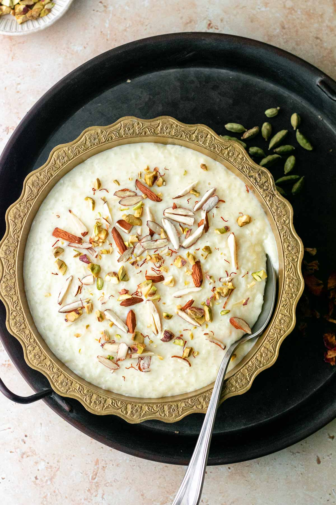
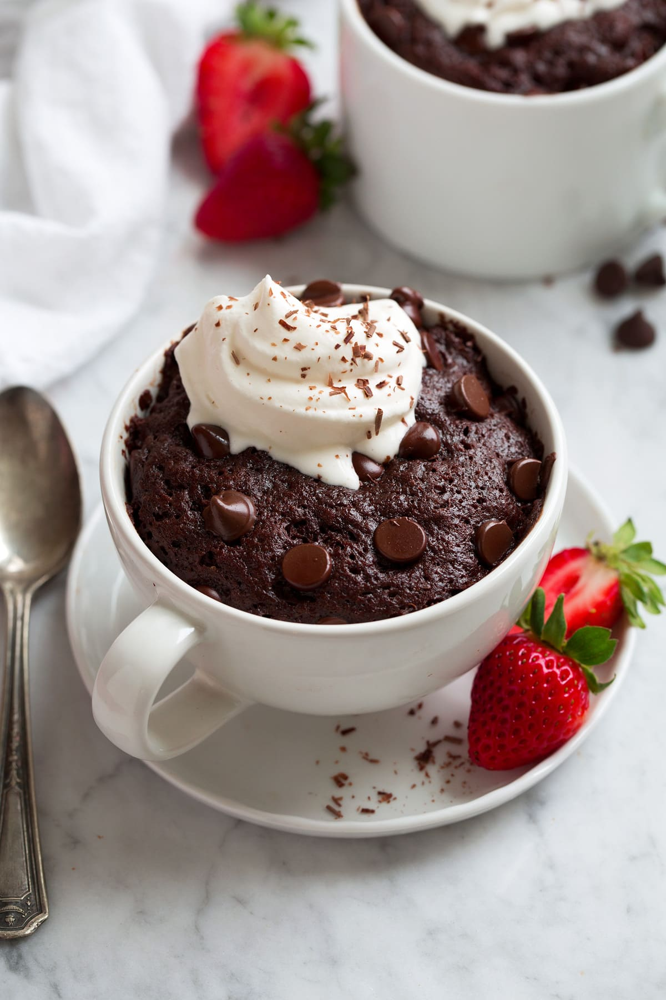
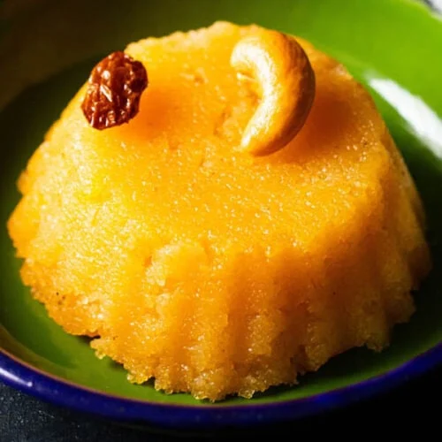
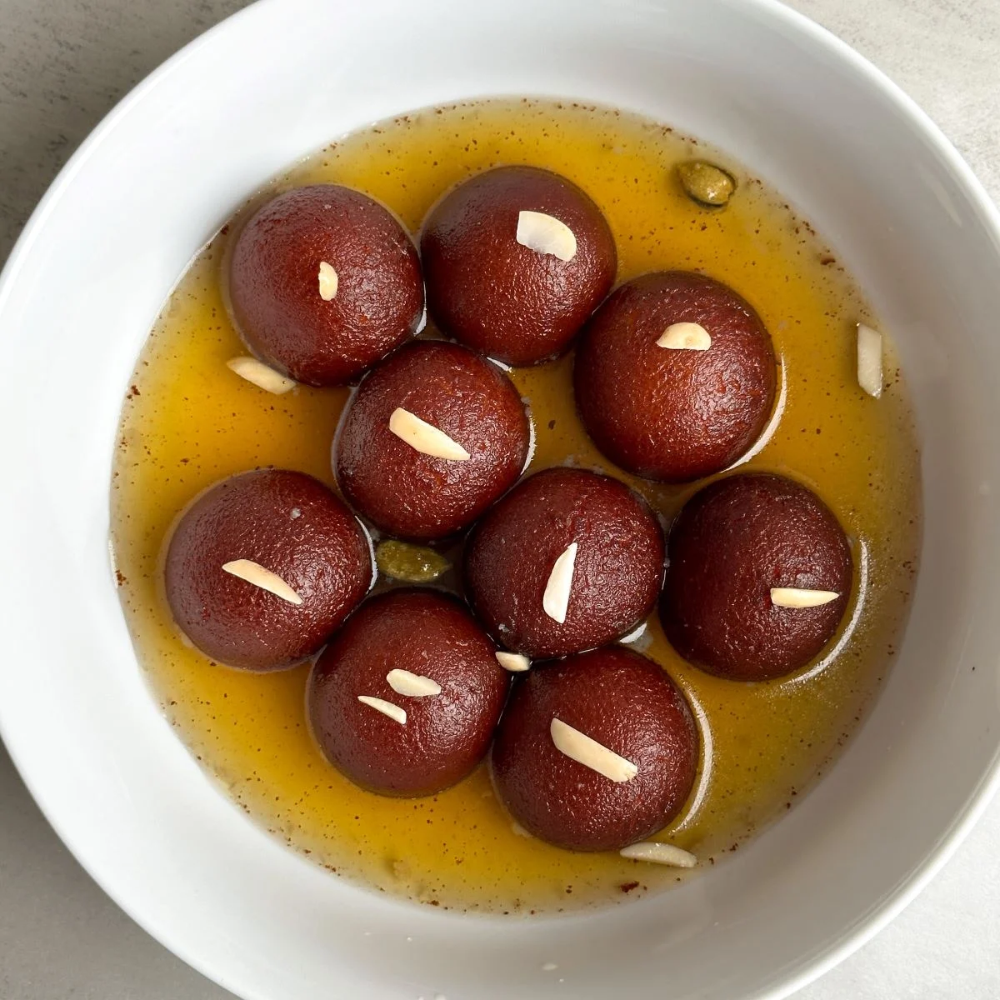

Sweet Treats (Desserts)
Desserts for cravings, celebrations, or festivals

Kheer
Ingredients :
- 1/4 cup rice
- 2 cups milk
- 1/4 cup sugar
- 2 tbsp chopped nuts (almonds, cashews)
- 1/4 tsp cardamom powder
Making Process :
- Wash rice and soak 15 min.
- Boil milk in a pan, add rice and cook on low heat, stirring often until rice is soft and milk thickens (~30 min).
- Add sugar, cardamom, and nuts. Cook 5 more minutes.
- Serve warm or chilled.

Chocolate Mug Cake
Ingredients :
- 4 tbsp all-purpose flour
- 4 tbsp sugar
- 2 tbsp cocoa powder
- 1/4 tsp baking powder
- 3 tbsp milk
- 2 tbsp oil
- 1/4 tsp vanilla essence (optional)
Making Process :
- In a microwave-safe mug, mix flour, sugar, cocoa powder, and baking powder.
- Add milk, oil, and vanilla. Mix until smooth.
- Microwave on high for 1-2 minutes until cooked.
- Let cool slightly and eat directly from the mug.

Rava Kesari
Ingredients :
- 1/4 cup semolina (rava)
- 1/2 cup sugar
- 1 tbsp ghee
- 1 1/4 cup water
- Few saffron strands or yellow food color (optional)
- 1 tbsp chopped nuts (cashews, almonds)
Making Process :
- Heat ghee in a pan, roast rava until aromatic.
- Boil water with saffron/food color and add to roasted rava slowly, stirring continuously to avoid lumps.
- Add sugar and mix well. Cook till mixture thickens and rava is cooked.
- Garnish with nuts and serve warm.

Gulab Jamun
Ingredients :
- 1/2 cup milk powder
- 2 tbsp all-purpose flour
- 2 tbsp milk (approx.)
- Oil for deep frying
- 1 cup sugar
- 1 cup water
- 1/4 tsp cardamom powder
- Few rose water drops (optional)
Making Process :
- Mix milk powder, flour, and milk to form soft dough
- Make small smooth balls.
- Deep fry on low heat till golden.
- Boil sugar and water to make syrup, add cardamom and rose water.
- Soak fried balls in warm syrup for 1 hour before serving.